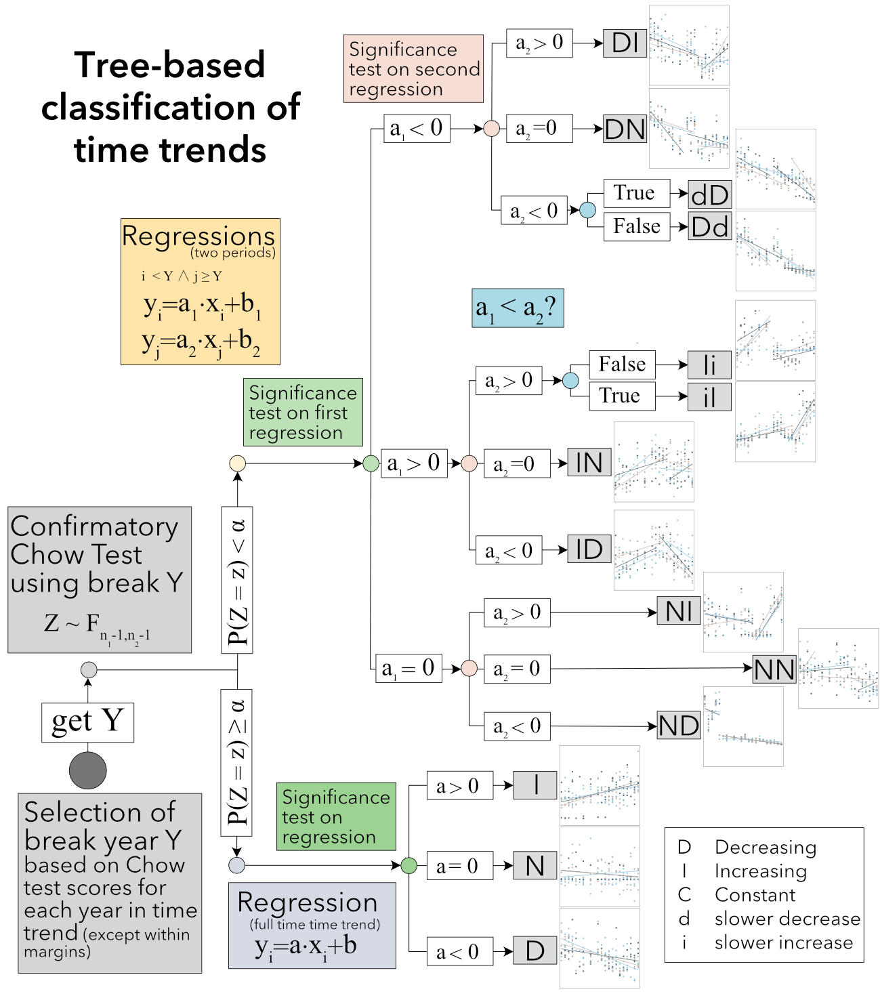

Welcome to chowclassifier’s documentation!
Table of Contents
Description
There are many application where it is useful to analyse rapidly a large number of time-series for overall trends and possible breakpoint at which the trend changes. For example, spotting increasing trends in potential contaminants concentration from the outputs of non-target screening from high resolution mass spectrometry.
ChowClassifier aims to solve this. It is a script that performs a series of Chow tests on a time-indexed dataset to determine if a breakpoint in the time trends is probable. Two classes Chow and ChewData enable to perform the tests, generate plots and export the results in csv and excel. Dataset with groups can be ran simultaneously with ChewData indicating with namecol the name of the grouping column. Calling run on a ChewData instance will create an instance of Chow for each group and classify them into the following categories.
Breakpoint ? |
Category |
Description |
No |
N |
non-significant overall trend |
No |
I |
significant increasing overall trend |
No |
D |
significant decreasing overall trend |
Yes |
NN |
non-significant trend on set1 and non-significant trend on set2 |
Yes |
NI |
non-significant trend on set1 and significant increasing trend on set2 |
Yes |
ND |
non-significant trend on set1 ans significant decreasing trend on set2 |
Yes |
IN |
significant increasing trend on set1 and non-significant trend on set2 |
Yes |
ID |
significant increasing trend on set1 and significant decreasing trend on set2 |
Yes |
iI |
significant increasing trend on both set1 and set2 with greater increase in set2 |
Yes |
Ii |
significant increasing trend on both set1 and set2 with greater increase in set1 |
Yes |
DN |
significant decreasing trend on set1 and non-significant trend on set2 |
Yes |
DI |
significant decreasing trend on set1 and significant increasing trend on set2 |
Yes |
dD |
significant decreasing trend on both set1 and set2 with greater decrease in set2 |
Yes |
Dd |
significant decreasing trend on both set1 and set2 with greater decrease in set1 |
where set1 and set2 indicate respectively the data before the breakpoint and after. The decision process for this classification is shown in the following schema:

Chow test
Chow test was first derived by Gregory Chow 1 in 1960 and later by Franklin Fisher 2. We test the significance of the breakpoint under the null hypothesis \(Z=\frac{S_c-(S_1+S_2)}{S_1+S_2}\cdot\frac{N_1+N_2-2\cdot k}{k}\) where \(k=3\) is the total number of parameters. This follows a F-distribution with \(k\) and \(N_1+N_2-6\) degrees of freedom, where \(S_C\) is the sum of squared residuals of the regression on the full time series, \(S_1\), \(S_2\) are the sums of squared residuals of the regression on the first, and respectively, the second half of the time series and \(N_1\), \(N_2\) are the number of observation for each half. See also 3.
References
- 1
Chow, Gregory C. “Test of Equality Between Sets of Coefficients in Two Linear Regressions”. Econometrica 28, no. 3 (1960): 591-605. https://www.jstor.org/stable/1910133.
- 2
Fisher, Franklin M. “Tests of Equality Between Sets of Coefficients in Two Linear Regressions: An Expository Note”. Econometrica2 38, no. 2 (1970): 361-66. https://www.jstor.org/stable/1913018.
- 3
Installation
Use the following command to install chowlcassifier:
pip install chowclassifier
Use
The script can be ran on any file with python -m chowclassifier -f path/to/file/filename.csv -X xcol -y ycol -n grouping_name or it can be imported:
from chowclassifier import ChewData
# define the path to data
filepath = "example/data"
# define the name of the file containing the data (with extension)
filename = "stocks.csv"
# define the path where figures will be saved
savingpath_figures = 'example/fig'
# what name has the X/time column?
timecol = 'Date'
# what name has the y/value column?
ycol = 'Close'
# initial breakpoint ?
initial_breakpoint = None
C = ChewData(filename = f"{'/'.join([x for x in [filepath,filename] if x not in [None,'']])}",
timecol = timecol, ycol = ycol)
########## use the code line below if your X/time column is not a number, e.g. a date
########## comment it otherwise
C.parse_timecol(date_format = '%Y-%m-%d') #
C.run(breakpoint = initial_breakpoint)
C.plot(xlabel = 'time', ylabel='value',# labels given to the axes
title = "Chow Classification",# title of the main plot
filename = f"{'/'.join([x for x in [savingpath_figures,filename] if x not in [None,'']])}.png",
figsize=(16,8),sharey=True)
C.plot_individually(savingpath = savingpath_figures, format = 'png',
xlabel = 'time', ylabel='value',# labels given to the axes
)
Class and method descriptions
Licence
GNU LESSER GENERAL PUBLIC LICENSE Version 2.1, February 1999